All three trace themselves to Jesus of Nazareth (c. 4 BC – c. AD 33) and his apostles.
ClickTap anyone for their story + more shows everyone in a century A dotted circle opens a family of churches
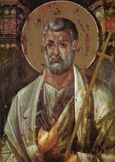
St Peterd. c. 64, by tradition · 1stLed the apostles; martyred in Rome.Early names and dates follow later tradition.
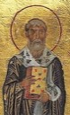
Linusc. 64–c. 76 · 2ndAnacletusc. 76–c. 88 · 3rd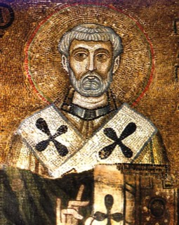
Clement Ic. 88–c. 99 · 4thCredited with the letter to Corinth. St Andrew1st century, by traditionFounded the see, by tradition.
St Andrew1st century, by traditionFounded the see, by tradition.Bishops before Metrophanes (c. 306) are known from later lists.
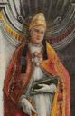
Evaristusc. 105 · 5th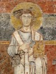
Alexander Ic. 105–c. 115 · 6th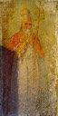
Sixtus Ic. 115–c. 125 · 7th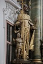
Telesphorusc. 125–c. 136 · 8th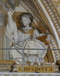
Hyginusc. 136–c. 140 · 9thPius Ic. 140–c. 155 · 10th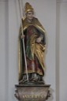
Anicetusc. 155–c. 166 · 11th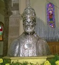
Soterc. 166–c. 174 · 12th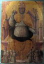
Eleutheriusc. 174–c. 189 · 13th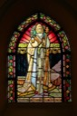
Victor Ic. 189–c. 198 · 14th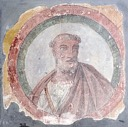
Callixtus Ic. 218–c. 222 · 16th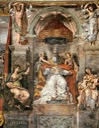
Urban Ic. 222–c. 230 · 17th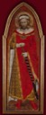
Pontianc. 230–c. 235 · 18th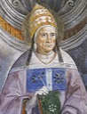
Anterusc. 235–c. 236 · 19th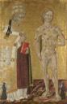
Fabianc. 236–c. 250 · 20th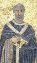
Cornelius251–253 · 21st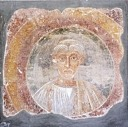
Lucius I253–254 · 22nd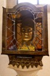
Stephen I254–257 · 23rdSixtus II257–258 · 24th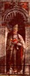
Dionysius259–268 · 25th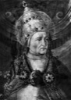
Felix I269–274 · 26th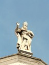
Eutychian275–283 · 27th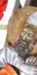
Caius283–296 · 28th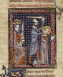
Marcellinus296–304 · 29th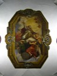
Marcellus I308–309 · 30th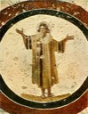
Eusebius309–310 · 31st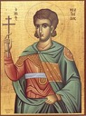
Miltiades311–314 · 32nd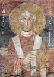
Sylvester I314–335 · 33rd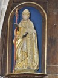
Mark336 · 34th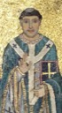
Julius I337–352 · 35th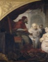
Liberius352–366 · 36th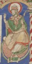
Damasus I366–384 · 37th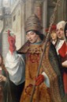
Siricius384–399 · 38th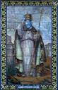
Anastasius I399–401 · 39th

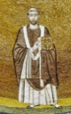
Symmachus498–514 · 51stHormisdas514–523 · 52nd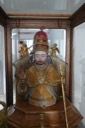
John I523–526 · 53rdFelix IV526–530 · 54thBoniface II530–532 · 55thJohn II533–535 · 56thAgapetus I535–536 · 57th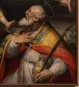
Silverius536–537 · 58thVigilius537–555 · 59thPelagius I556–561 · 60thJohn III561–574 · 61stBenedict I575–579 · 62nd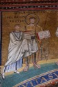
Pelagius II579–590 · 63rd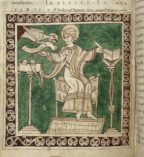
Gregory I590–604 · 64thSent Augustine to England, 597.
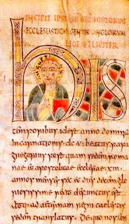
Augustine597–604 · 1stSent to England by Gregory I.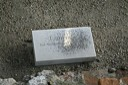
Laurence604–619 · 2ndMellitus619–624 · 3rdJustus624–627 · 4thHonorius627–653 · 5th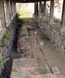
Deusdedit655–664 · 6th


Catholic and Orthodox divide: Rome and Constantinople exchange excommunications.
1268–1271 · The see stood vacant for nearly three years.
Gregory X1271–1276 · 184thInnocent V1276 · 185thAdrian V1276 · 186thJohn XXI1276–1277 · 187thNicholas III1277–1280 · 188thMartin IV1281–1285 · 189thHonorius IV1285–1287 · 190thNicholas IV1288–1292 · 191stCelestine V1294 · 192ndBoniface VIII1294–1303 · 193rd1204–1261 · The Latin Empire held the city; patriarchs reigned from Nicaea.
Michael IV1208–12121378–1417 · Rival popes at Avignon (from 1378) and Pisa (from 1409); this list follows the Roman line.
Boniface IX1389–1404 · 203rd
Anglican and Catholic divide: Henry VIII made head of the English Church.
1554–1558 · England reconciled with Rome under Mary I; Pole the last archbishop in communion with the Pope.
Reginald Pole1556–1558 · 70th
1645–1660 · No archbishop after Laud’s execution; episcopacy abolished 1646.
William Juxon1660–1663 · 77thGilbert Sheldon1663–1677 · 78thWilliam Sancroft1678–1690 · 79thJohn Tillotson1691–1694 · 80th Cyril Lucaris1620–1638Sent Codex Alexandrinus to England.
Cyril Lucaris1620–1638Sent Codex Alexandrinus to England. Michael Ramsey1961–1974 · 100thMet Paul VI in Rome, 1966.
Michael Ramsey1961–1974 · 100thMet Paul VI in Rome, 1966.